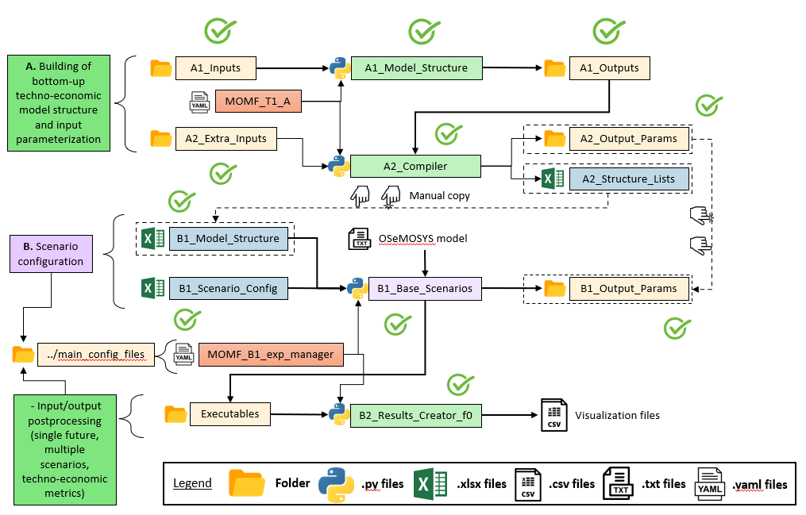

Getting Started
Firstly, it is important take in count the workflow could you see in the Figure Structure Tier 1. This workflow indicates us which are the files important to make execution of each step, and to see all workflow and take a better comprenhension.
Example
In this example works with data of the model “Climita”, this one is avaible in the a GitHub repository
Create Model Structure (A1)
The first step of the MOMF is create the model
structure, for that you need to execute the
python script A1_Model_Structure. To could
make that execution you need to make a parametrization
the excel files: A-I_Classifier_Modes_Demand,
A-I_Classifier_Modes_Supply,
A-I_Classifier_Modes_Transport and
A-I_Horizon_Configuration onto A1_Inputs,
also you need adapt the yaml file MOMF_T1_A
to the model.
Then you need to execute the python script
A1_Model_Structure. When the execution
finish have been create some files:
A-O_AR_Model_Base_Year.xlsx,
A-O_AR_Projections.xlsx, A-O_Demand.xlsx,
A-O_Fleet.xlsx, A-O_Parametrization.xlsx
and A-O_Fleet_Groups.pickle onto A1_Outputs
; and this files are rewrite with the default
structure each time than you execute the python
script, so is recomendate only run this python
script one time.
t1_confection # Main folder of MOMF Tier 1
├── A1_Inputs # Folder with input data to
│ ├── A-I_Classifier_Modes_Demand.xlsx # create structure model
│ ├── A-I_Classifier_Modes_Supply.xlsx
│ ├── A-I_Classifier_Modes_Transport.xlsx
│ ├── A-I_Horizon_Configuration.xlsx
│ ├── A-I_Readme.txt # Description of each excel file
├── A1_Outputs
│ ├── A-O_AR_Model_Base_Year.xlsx
│ ├── A-O_AR_Projections.xlsx
│ ├── A-O_Demand.xlsx
│ ├── A-O_Fleet.xlsx
│ ├── A-O_Parametrization.xlsx
│ ├── A-O_Fleet_Groups.pickle
│ ├── A-O_Readme.txt # Description of each excel file
└── ...
File |
Description |
|---|---|
|
Defines the sectors, energy vectors per sector, and complexity level for modeling demand. |
|
Describes the production and transformation processes for each energy vector. |
|
Structures the transport sector. |
|
Contains the system model period. |
|
Activity ratio for the base year. |
|
Activity ratio projections. |
|
Guidelines on performing demand projections. |
|
Defines the 2019 fleet according to MDHA. |
|
Provides tables for users to fill in data parameters. |
|
Data on groups’ fleet distribution. |
Model Compiler (A2)
The second step are define the process to make compilation of the
model into files by parameter. To make that take as inputs the
excel files into A1_Outputs, also the excel files into folder
A2_Xtra_Inputs and the file A2_Structure_Lists. After that,
is necessarily adapt the yaml file MOMF_T1_A`, only the variables
use in the python script A2_Compiler. Then, execute this python
script. Moreover, is important to have in the folder
A2_Outputs_Params/Default, because this one has the default files
by parameter whose uses by python script A2_Compiler.
This python script generate some files, in the folders A1_Outputs
and A2_Outputs_Params, in the second generate the same quantity
of folder than number of scenarios has the model and into this folders
are the excel files with data by parameter. The nex tree only has the
outputs files.
t1_confection # Main folder of MOMF Tier 1
├── A1_Outputs
│ ├── A-O_AR_Projections_COMPLETED.xlsx
│ ├── A-O_Demand_COMPLETED.xlsx
│ ├── A-O_Fleet_COMPLETED.xlsx
│ ├── A-O_Parametrization_COMPLETED.xlsx
│ ├── A-O_Fleet_Groups_Distance.pickle
│ ├── A-O_Fleet_Groups_OR.pickle
│ ├── A-O_Fleet_Groups_T2D.pickle
├── A2_Output_Params
│ ├── BAU
│ │ ├── excel files by parameter
│ ├── NDP
│ │ ├── excel files by parameter
| | ├── Default
| │ │ ├── excel files by parameter
| ├── ...
└── ...
File |
Description |
|---|---|
|
Provides tables for users to fill in data parameters after read. |
|
Defines the 2019 fleet according to MDHA after read. |
|
Guidelines on performing demand projectionsafter read. |
|
Activity ratio projectionsafter read. |
|
Data on groups’ fleet distribution. |
|
Data of distance by transport technologies. |
|
Data of Output Activity Ratio by transport groups technologies. |
|
Data with relation between technologies and fuels of transport. |
|
Are excel files with data by each parameter of OSeMOSYS define by the model. |
Create Input File (B1)
The next step is longer than other and also you need to be
carefully and is important follow the workflow in th picture
at the beginnig of the section. First, you go to the folder
B1_Output_Params and delete any folder you found here.
Now, go to the folder A2_Outputs_Params and copy folders
whose has scenario name and go to the folder B1_Output_Params
and paste these folders. Also you need to make manual copy
of the data from the file A2_Structure_Lists.xlsx` to the
file B1_Model_Structure.
Then, you must do the parametrization of the model in the
files B1_Scenario_Config.xlsx and MOMF_B1_exp_manager.yaml.
In the last yaml file mention use use for some scripts, for
this reason each variable have a flag to indicate in what
scripts it is use, except the two sections in the final of
the file, the variables below each section correspond to the
script metion in the section head, the name of the sections
are these: # Parameters to script create_csv_concatenate.py
and `# Parameters to script change_default_vals_params.py `.
In the next table are detail the most important variables in the yaml file for the script:
Warning
Only change the value not the name. If you change the name the execution of the script fail.
Variable |
Description |
|---|---|
|
Specify the solver to use. Options include ‘glpk’, ‘cbc’, or ‘cplex’. |
|
Choose the method for data postprocessing: ‘old’ uses MOMF’s version, ‘new’ uses otoole’s version. |
|
Decide whether to delete intermediate files. Options: ‘True’ or ‘False’. |
|
Specify the number of cases to run per iteration, based on the total scenarios. Recommended range: 1-2; maximum should match the total number of scenarios. |
|
Choose the process type: ‘None’ for calculations only, ‘Generator’ to write input files, ‘Executor’ to run input files, or ‘Both’ for all processes. |
|
Enter the initial for the study region, e.g., ‘Climita’ for Climita or ‘CR’ for Costa Rica. |
|
Enter the discount rate value, e.g., 0.00504. |
|
Toggle the waste module on or off. Options: ‘True’ or ‘False’. |
|
Toggle the main transport module on or off. Options: ‘True’ or ‘False’. |
|
Specify the name of the second scenario. Limit to 3 words. |
|
Specify the year to apply the discount rate. |
|
Specify the year to make changes in the fleet. |
|
Enter the final year of the model. |
|
This dictionary should contain default values for every OSeMOSYS parameter available in MOMF. Ensure the value of DiscountRate matches that of disc_rate. |
|
This list should include every OSeMOSYS parameter available in MOMF. Comment out unused parameters with #. |
|
This dictionary holds a list for each model scenario, containing names of parameters exclusive to that scenario. Parameters can appear in multiple lists. If defined here, comment them out in the params_inputs_data list. |
Tip
The variable generator_or_executor indicates what process you want to realize.
The options are:
‘None’: to only make the calculations.
‘Generator’: Calculates, generates input files, and executes input tests.
‘Executor’: to make the calculations and execute the input files.
‘Both’: to manage the processes of the previous options.
To write the model, use the script B1_Base_Scenarios_Adj_Parallel.py.
Edit the generator_or_executor variable in the configuration file
MOMF_B1_exp_manager.yaml to select an operation mode. Available
options to writting model are: ‘Generator’ or ‘Both’, but remember the second
option also execute the model.
The results of this execution you can found into this folder B1_Output_Params.
If you remember in this folder you paste the outputs of the A2 outputs, but
in this process these file are overwrite. Also, you could find the model
file into the folder Executables in a folder of each scenario, this file is
a txt file (scenario_#future.txt), eg: BAU_0.txt.
In the next tree you see the ubication of each file.
osemosys_momf # Main folder of MOMF repository
├── t1_confection # Main folder of MOMF Tier 1
| ├── B1_Output_Params # Folder with outputs of the
| │ ├── BAU # B1_Base_Scenarios_Adj_Parallel.py
| │ │ ├── excel files by parameter
| │ ├── NDP
| │ │ ├── excel files by parameter
| ├── A2_Output_Params # Folder with outputs of the A2_Compiler.py
| │ ├── BAU
| │ │ ├── excel files by parameter
| │ ├── NDP
| │ │ ├── excel files by parameter
| | ├── Default
| │ │ ├── excel files by parameter
| ├── A2_Structure_Lists.xlsx
| ├── B1_Model_Structure.xlsx
| ├── B1_Scenario_Config.xlsx
| ├── Executables # Folder with outputs of the
| │ ├── BAU_0 # B1_Base_Scenarios_Adj_Parallel.py
| │ │ ├── BAU_0.txt
| │ │ ├── BAU_0_Input.csv
| │ │ ├── BAU_0_Output.csv
| │ ├── NDP_0
| │ │ ├── NDP_0.txt
| │ │ ├── NDP_0_Input.csv
| │ │ ├── NDP_0_Output.csv
| ├── tests_results
| │ ├── comparison_results_BAU_0.txt
| │ ├── comparison_results_NDP_0.txt
| | ├── ...
| ├── A2_Compiler.py
| ├── B1_Base_Scenarios_Adj_Parallel.py
| ├── ...
├── config_main_files # Folder with config files and otoole configuration
| ├── MOMF_B1_exp_manager.yaml
| ├── ...
├── config_plots # Folder with scripts to make inputs test and
| ├── create_csv_concatenate.py # concatenate each output file by otoole
| ├── test_inputs.py
| ├── ...
└── ...
Input Tests
The MOMF includes a routine to test model input data, executed by
calling the script test_inputs.py. This aims to reduce the likelihood
of the solver failing to find an optimal solution. It is crucial to use
this routine to identify potential issues early, especially after the
OSeMOSYS matrices are built, which can be time-consuming for large
models. Resolving inconsistencies before model execution saves time.
The tests compare model constraints like: TotalTechnologyAnnualActivityUpperLimit, TotalTechnologyAnnualActivityLowerLimit, TotalAnnualMaxCapacity, and ResidualCapacity; they also use conversion factors: AvailabilityFactor, CapacityFactor to avoid discrepancies.
These tests are apply for each future and each scenario, and the
results are store in the folder tests_results with the default
name comparison_results_scenario_#future eg: comparison_results_BAU_0.txt.
The following are the tests:
Test 1: Verification of Technology/Sub-technology Differences
This test compares the values of transport technologies with those of their respective sub-technologies. Each technology can have multiple sub-technologies, while a sub-technology belongs to only one main technology. The process involves calculating the sum of the values for all sub-technologies and comparing it with the value of the main technology. If the sum of the sub-technologies exceeds the value of the main technology, the difference is recorded. This test ensures that the sub-technologies do not surpass the accuracy capabilities of the main technology.
Test 2: Verification of Yearly Decrease in Technology Capacity
This test verifies if the model shows a decline in the parameter “TotalAnnualTechnologyCapacity” from one year to the next across all technologies. It examines the annual values for each technology to ensure that no year’s value is less than that of the preceding year. This is vital for identifying unexpected reductions in data, which should otherwise increase or remain constant annually. The methodology can be adapted for other parameters as well.
Test 3: Analysis of Technology Capacity Limits
This assessment ensures the values of “TotalTechnologyAnnualActivityLowerLimit” exceed those of “TotalTechnologyAnnualActivityUpperLimit” for each technology. The values are compared for all relevant technologies, and discrepancies where the lower limit surpasses the upper are documented. This test confirms that the upper limits correctly exceed the lower limits, preventing errors in setting constraints.
Test 4: Residual versus Maximum Capacity Evaluation
This evaluation ensures that “ResidualCapacity” values do not surpass the “TotalAnnualMaxCapacity” for any technology. It checks if the residual capacities exceed the maximum allowed capacities, recording any instances where this occurs. This process is applied across technologies with these specific parameters.
Test 5: Demand and Capacity Compatibility Check
This test verifies whether the “SpecifiedAnnualDemand” for fuels is less than the “TotalAnnualMaxCapacity” multiplied by “OutputActivityRatio” for related technologies. It calculates whether the total demand, which may involve several technologies, exceeds the combined capacities adjusted for output ratios. Instances where the specified demand falls below the calculated capacity are noted. It is crucial to ensure that demand projections do not exceed what the available technology can handle, with a specific focus on transportation-related metrics.
Test 6: Evaluation of Demand vs. Lower Activity Limits
This test examines whether the “SpecifiedAnnualDemand”, associated with fuels, is lower than the “TotalTechnologyAnnualActivityLowerLimit” adjusted by the “OutputActivityRatio”. This involves comparing the “SpecifiedAnnualDemand” to the summed lower limits of related technologies, adjusted for output ratios, to ensure the demand does not surpass these thresholds. This check is crucial for ensuring compatibility in transportation-related variables only.
Test 7: Comparison of Activity Limit and Maximum Capacity
This evaluation checks if “TotalTechnologyAnnualActivityLowerLimit” is less than the product of “TotalAnnualMaxCapacity” and “CapacityFactor”. Should the lower limit exceed this product, it suggests potential overestimations in activity relative to available capacity, and such instances are noted. This test is applicable to technologies where these three parameters are defined.
Test 8: Assessing Technology Activity Limits Against Capacity
This test determines if “TotalTechnologyAnnualActivityLowerLimit” is below the combined effects of “TotalAnnualMaxCapacity”, “CapacityFactor”, and “AvailabilityFactor”. Exceeding this calculated limit would indicate possible excesses in planned activity versus capacity, prompting registration of such anomalies. Each technology with these parameters undergoes this assessment.
Test 9: Max Capacity vs. Lower Limit Comparison
The purpose of this test is to ensure that “TotalAnnualMaxCapacity” values do not fall below those of “TotalTechnologyAnnualActivityLowerLimit”. Any occurrence of the maximum capacity being lower than the lower limit is documented, affirming the integrity of capacity constraints.
Test 10: Capacity Comparison of Technology and Sub-technologies
This analysis confirms that the total “TotalAnnualMaxCapacity” of all sub- technologies does not exceed the “TotalAnnualMaxCapacity” of their overarching technology. Registrations are made if sub-technologies surpass the total technology capacity. This verification is limited to transportation-related variables only.
Test 11: AFOLU Sector Activity Upper Limit Comparison
This test verifies if the combined “TotalTechnologyAnnualActivityLowerLimit” of sub-technologies is greater than that of the parent technology. Such instances, suggesting that sub-technological activities exceed the main technology’s capacity, are recorded. This test is specific to the AFOLU sector variables.
Execution Model (B1)
To run the model, use the script B1_Base_Scenarios_Adj_Parallel.py.
Edit the generator_or_executor variable in the configuration file
MOMF_B1_exp_manager.yaml to select an operation mode. Available
options to execute model are: ‘Executor’ or ‘Both’, but remember the
second option also write the model.
The results of this execution you can found into this folder: Executables,
in a folder of each scenario you found three files: the txt file with the
model (scenario_#future.txt), csv file with input data
(scenario_#future_Input.txt) and csv file with output data
(scenario_#future_Output.txt), eg:
BAU_0.txt
BAU_0_Input.csv
BAU_0_Output.csv
The most important output of this process is the file to store the output data, the third one in the last example. It is important to now this file only are create if the solution status is Optimal Solution.
Results Concatenate (B2)
The process of this key step to make easier the results analysis.
When you execute the python scrip B2_Results_Creator_f0.py,
this one take the csv files with input and output data of the
model of each scenario concatenate them, and create 4 files:
RegionNameInput.csv
RegionNameInput_2024_10_22.csv
RegionNameOutput.csv
RegionNameOutput_2024_10_22.csv
The files that do have a date are to make tracking if you execute the model in diferents dates, because the files that don’t have a date are overwrite with each execution. Also, the module instead RegioName by the name of the region of the model, eg: Climita for Climita or CR for Costa Rica.
Comparison Models
The MOMF has two modes for postprocessing of the data:
The orginal one of the method: this only use as solver GLPK and the a function of the method name Data_Processor.
otoole: through this tool the user should use the following solvers: GLPK, CBC and CPLEX. The results of otoole are a csv file by parameter, so was create a routine to concatenate these files and to have the same output file than the first mode, to do that is call the python script create_csv_concatenate.py.
Data Postprocessing Modes
The method utilizes two modes for postprocessing data, necessitating
verification of outcomes. A critical aspect of this involves testing,
particularly with input files generated towards the end of the process.
The script compare_txt_inputs.py compares input files between the
traditional and updated methods. It checks if values are equivalent,
though their order might change, as the script could modify the row
order.
Reading Text Files: Begins by opening and reading two specified files.
Sorting Parameters: Organizes parameters within a DataFrame sorted into five categories:
Type 1: Column names are years, and index names are the first element from the data row, e.g.:
param AvailabilityFactor default 1 := [GUA,*,*]: 2018 2019 2020 2021 2022 2023 2024 2025 2026 2027 2028 2029 2030 2031 2032 2033 2034 2035 2036 2037 2038 2039 2040 2041 2042 2043 2044 2045 2046 2047 2048 2049 2050 := INORG_RCY_OS 1.0 1.0 1.0 1.0 1.0 1.0 1.0 1.0 1.0 1.0 1.0 1.0 1.0 1.0 1.0 1.0 1.0 1.0 1.0 1.0 1.0 1.0 1.0 1.0 1.0 1.0 1.0 1.0 1.0 1.0 1.0 1.0 1.0 1.0 ;
Type 2: Similar to Type 1, but uses the second element of the second row as index names.
param CapacityFactor default 1 := [GUA,AD,*,*]: 2018 2019 2020 2021 2022 2023 2024 2025 2026 2027 2028 2029 2030 2031 2032 2033 2034 2035 2036 2037 2038 2039 2040 2041 2042 2043 2044 2045 2046 2047 2048 2049 2050 := All 1.0 1.0 1.0 1.0 1.0 1.0 1.0 1.0 1.0 1.0 1.0 1.0 1.0 1.0 1.0 1.0 1.0 1.0 1.0 1.0 1.0 1.0 1.0 1.0 1.0 1.0 1.0 1.0 1.0 1.0 1.0 1.0 1.0 ;
Type 3: Columns are years, and indexes combine the second and third elements of each parameter’s definition, e.g.:
param EmissionActivityRatio default 0 := [GUA,NO_OSS_NO_COLL,CO2e,*,*]: 2018 2019 2020 2021 2022 2023 2024 2025 2026 2027 2028 2029 2030 2031 2032 2033 2034 2035 2036 2037 2038 2039 2040 2041 2042 2043 2044 2045 2046 2047 2048 2049 2050 := 1 0.0 0.0 0.0 0.0 0.0 0.0 0.0 0.0 0.0 0.0 0.0 0.0 0.0 0.0 0.0 0.0 0.0 0.0 0.0 0.0 0.0 0.0 0.0 0.0 0.0 0.0 0.0 0.0 0.0 0.0 0.0 0.0 0.0 ;
Type 4: Column names are the second row vector, and the index is the first element of the third row, e.g.:
param CapacityToActivityUnit default 1 : INORG_RCY_OS AD COMPOST LANDFILL NO_CONTR_OD OPEN_BURN SIT_CLAN LANDFILL_ELEC AERO_PTAR AERO_PTAR_RU ANAE_LAGN ANAE_LAGN_RU SEPT_SYST LATR EFLT_DISC OSS_INORG OSS_ORG NO_OSS_BLEND NO_OSS_NO_COLL INORG_DCOLL ORG_DCOLL BLEND_NO_DCOLL BLEND_NO_COLL INORG_SS ORG_SS NO_SS WWWT WWWOT SEWERWW DIRECT_DISC T5TSWTSW T5TWWTWW := GUA 1.0 1.0 1.0 1.0 1.0 1.0 1.0 1.0 1.0 1.0 1.0 1.0 1.0 1.0 1.0 1.0 1.0 1.0 1.0 1.0 1.0 1.0 1.0 1.0 1.0 1.0 1.0 1.0 1.0 1.0 1.0 1.0 ;
Type 5: Stores the complete definition row as a list, differing in treatment from the other types, e.g.:
param AccumulatedAnnualDemand default 0 := ;
Storing in Dictionaries: Data extracted is stored in dictionaries where each key is a parameter name and the value is the relevant DataFrame, except for Type 5 data.
- Data Comparison: Conducts checks to identify differences:
Index Differences: Verifies that indexes (technologies, fuels) match between DataFrames. Notes any discrepancies.
Value Differences: Compares values cell by cell. Records differences along with parameters and years.
Column Differences: Compares column names and records any discrepancies.
Comparison Results: Prints “The files are the same” if no differences are found. If there are discrepancies, it alerts “The files have differences, check variable ‘differences’”.
This process ensures thorough comparison of GNU MathProg formatted files, identifying any discrepancies in structure, indexes, columns, and values.